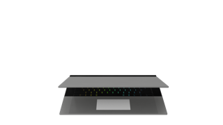

Processor
Gesockelde chip die vervangbaar blijft zonder het volledige moederbord af te schrijven.

Een modulaire laptop behandelt onderdelen als zelfstandige componenten in plaats van als permanente delen van een gesloten behuizing. Geheugen, opslag, batterij en poorten kunnen dan vervangen of geüpdatet worden zonder gespecialiseerd atelier of volledige demontage.
Gesockelde chip die vervangbaar blijft zonder het volledige moederbord af te schrijven.
Standaard SO-DIMM geheugen in plaats van vastgesoldeerd RAM, zodat upgrades eenvoudig blijven.
NVMe-opslag als los onderdeel, zodat defecten of capaciteitsnoden geen volledig nieuw toestel vragen.
Verwisselbare poortmodules tonen hoe flexibiliteit en herstelbaarheid samen kunnen bestaan.
Een batterij die apart vervangbaar is verlengt de bruikbare levensduur van de hele laptop.
Ook invoeronderdelen blijven verwisselbaar, zodat slijtage niet meteen een einde maakt aan het toestel.
Standaardisatie, schroefbare montage en duidelijke documentatie zorgen ervoor dat reparatie niet uitzonderlijk aanvoelt, maar ingebouwd zit in het product.